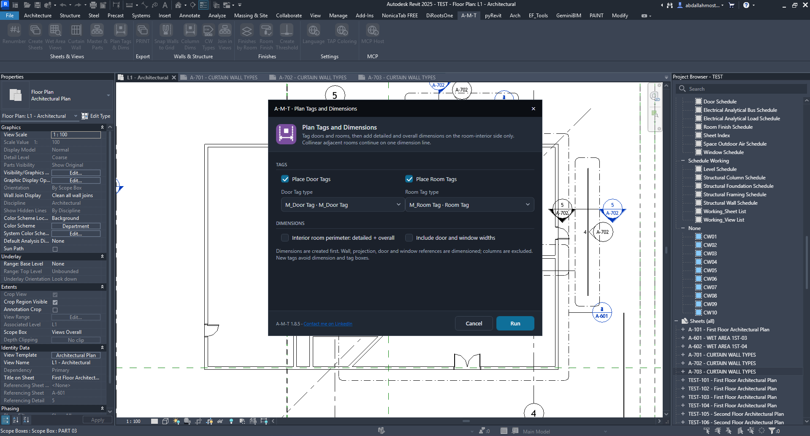
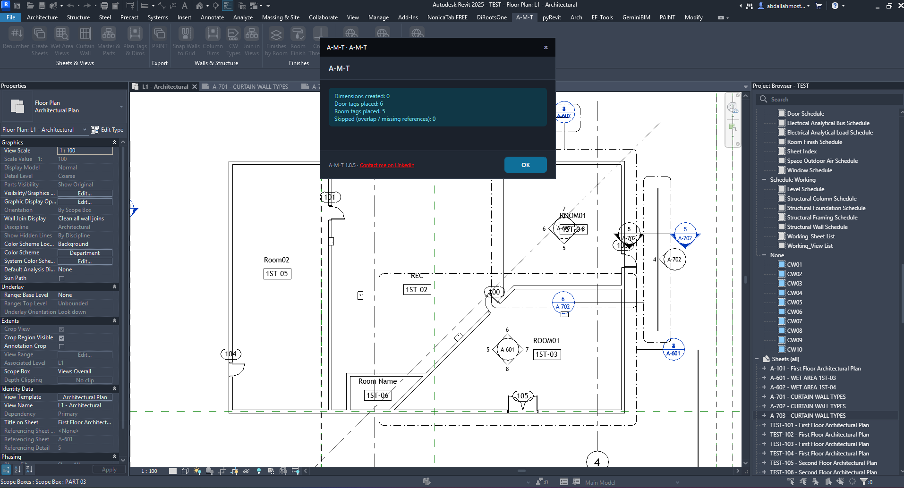

Plan Tags & Dims
Place door and room tags, then create interior room dimensions.
Walls & StructureVisual walkthroughHow the command works
Run the command from a floor plan, choose which tags and dimension operations to perform, select the required tag types, and click Run. The tool reports the number of dimensions and tags created, along with any skipped references.
Configure tags and dimensions

01 · Select the annotation operations
Place Door Tags enables door tagging; choose the family from Door Tag type. Place Room Tags enables room tagging; choose its family from Room Tag type.
Under Dimensions, enable Interior room perimeter: detailed + overall to create interior room dimension strings. Enable Include door and window widths to add their widths to the dimensioning.
The dialog notes that dimensions are created first; wall, projection, door and window references are dimensioned, while columns are excluded. New tags avoid dimension and tag boxes.
Understand the result

02 · Review the creation report
The completion dialog reports four values:
- Dimensions created — number of dimension elements created.
- Door tags placed — number of door tags placed.
- Room tags placed — number of room tags placed.
- Skipped (overlap / missing references) — items not placed because of overlap or missing references.
In the shown example, 6 door tags and 5 room tags were placed. No dimensions were created, and 0 items were skipped. Review the plan to confirm tag and dimension placement.
Watch Plan Tags & Dims in Action
Follow the command workflow inside Autodesk Revit.
Before you run
- Open the intended floor plan view.
- Confirm the required door and room tag families are loaded.
- Choose only the annotation operations you need.
- Review the completion counts and inspect the plan after execution.